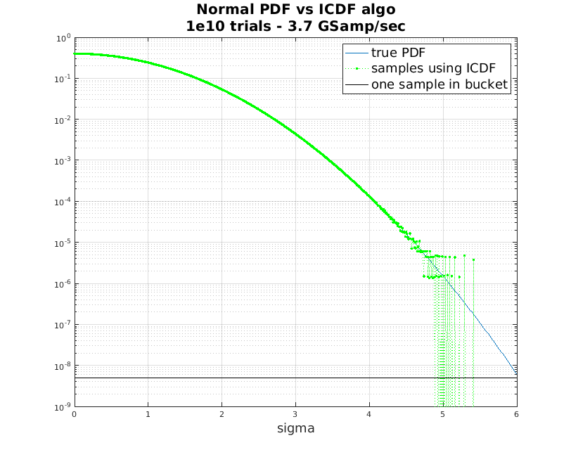
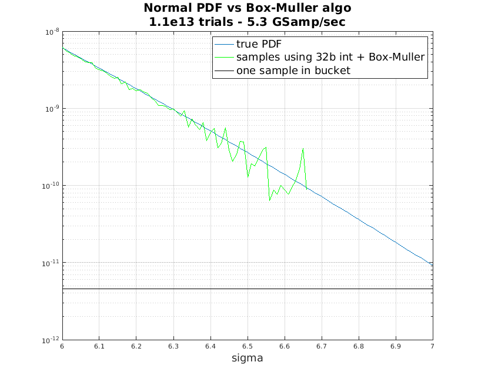
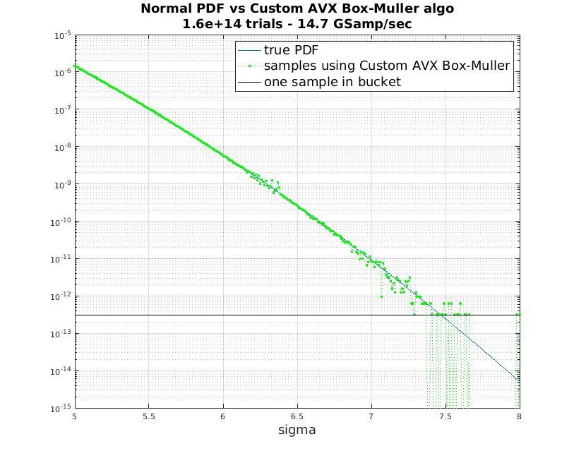

All simulations were run on a core i9-7920X running Ubuntu 18.04.
To generate white Gaussian noise (WGN), the first methods examined were functions available in the Intel Math Kernel Library (MKL). Figure one shows the expected probability density function (PDF) and that obtained by counting number of samples in each 0.01 sigma “bucket” for a large number of samples. This was done using the VSL_RNG_METHOD_GAUSSIAN_ICDF function.

The horizontal black line corresponds to just 1 sample in a give 0.01 sigma “bucket” for this number of trials. There is a factor of 2 involved because an absolute value is taken on the generated samples due to symmetry. Obviously, this method shows strong quantization effects around sigma=5, and it will never generate a value greater than 5.3 sigma.
Next, the MKL function
VSL_RNG_METHOD_GAUSSIAN_BOXMULLER2 was used, with results shown in
the figure below:
Here, we now see a limit of about 6.7 sigma, with some undulations around the true PDF for sigma greater than 6.3 sigma. The number of samples per second as well as the quality is better than the ICDF function, so it is unclear why the ICDF function would ever be the preferred option. Again, the black line shows that enough samples were generated to have plenty (about 20 or more) samples in each 0.01 sigma bucket.
Finally, a custom AVX-based normal distribution was written to try to get faster sample generation and a higher quality distribution. The PRNG is used is an AVX-aware version of sfc64. The sfc64 algorithm is described in http://pracrand.sourceforge.net/RNG_engines.txt. There is also an option to use an AVX-aware version of the xoshiro256++ PRNG. This algorithm is described in https://prng.di.unimi.it/.
If any of the 8 32-bit random integer values in a given 256-bit AVX word are less than 8, then an additional AVX word of PRNG values are generated, allowing for 8 64-bit random integers for this case. This extends the maximum sigma to about 9.3 while only incurring the additional computation very rarely. Results are shown below:

Here, we are definitely hitting the point where some “buckets” only have 1 sample in them, which occurs whenever the green line touches the black line. Given enough time, one could increase the number of trials beyond 1.6e14 if desired. There is also a bit of undulation near 6.3 sigma. This is where the original 32-bit PRNG is used, before transitioning to 64-bit. One could push this back a bit to remove this if desired. Overall, the 14.7 Gsamp/sec is almost 3x faster than the 5.3 Gsamp/sec observed for the MKL function.
The end result is fast generation of WGN samples with a very high maximum sigma.